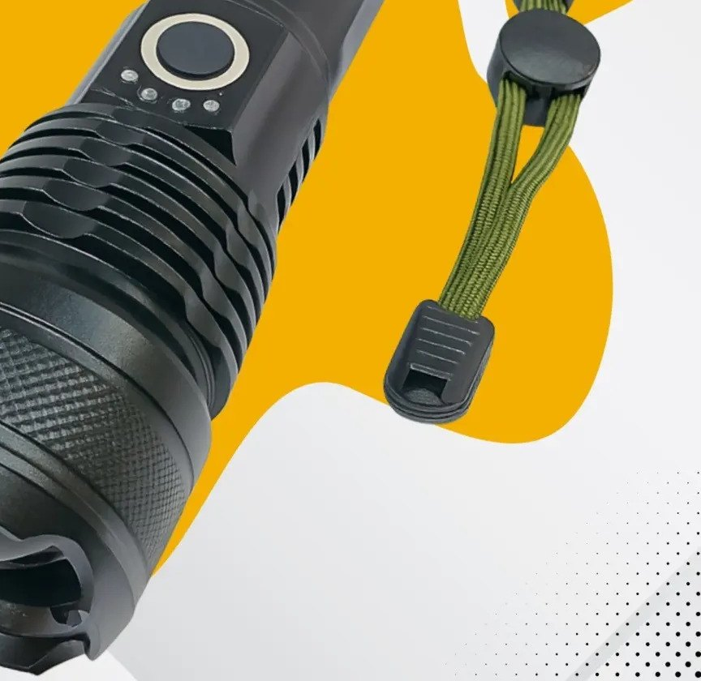

Casa e quintal · dados conferidos em 23/10/2026
Lanterna recarregável T9 por R$ 48,50: a 1ª em lanternas do Mercado Livre, com um alerta sobre os números do anúncio

Para ter uma lanterna recarregável na gaveta, no carro ou para trilha, a T9 da Apfer é a 1ª em lanternas do Mercado Livre, com nota 4,8 e 17.649 opiniões, por R$ 48,50. O título fala em “mais forte do mundo” e a ficha em 29.999 lúmens e 500 m de alcance: são números do vendedor, sem comprovação, e não os repetimos como verdade.
- Quer lanterna recarregável por USB para queda de energia, carro ou trilha
- Gosta de lanterna com zoom (foco ajustável) e 5 modos de luz
- Prefere corpo de alumínio e cordão de mão
- Quer garantia de potência ou alcance: os números do anúncio não têm comprovação
- Precisa de lanterna com proteção certificada: a ficha não informa classificação IP
- Quer laser: a ficha informa que não tem
Por que ele vende tanto
- Nota 4,8 de 5 com 17.649 opiniões na página do produto (23/10/2026).
- Selo “1º em Lanternas” do Mercado Livre e +100 mil vendidos (23/10/2026).
- R$ 48,50 em 23/10/2026.
O que você leva (segundo a ficha)
- Lanterna tática de LED em alumínio, 16,5 cm × 4 cm, 260 g.
- Recarregável por USB, bateria de íon de lítio (a ficha informa que inclui bateria).
- 5 modos de luz, zoom, duração máxima informada de 12 h.
- A ficha diz resistente a pó e à prova d’água, sem classificação IP.
Vale mais que as alternativas?
Lúmens, sem mágica
Lúmen mede a quantidade de luz; o alcance depende do foco e do ambiente. Como a página não traz medição independente nem certificação, o melhor parâmetro é o que clientes mostram em foto e vídeo à noite e quanto a bateria dura de verdade.
Para que serve
Luz forte para uso doméstico, carro, passeio e trilha. Para uso profissional ou tático de verdade, procure fabricante que publique medição e IP.
Garantir o meu agora →R$ 48,50 em 23/10/2026 · nota 4,8 · 17.649 opiniõesOs números de potência (29.999 lm) e de alcance (500 m) vêm da ficha do vendedor e não têm comprovação: para uma lanterna de 4 cm de diâmetro e 260 g, parecem exagerados. Compre pelo que ela entrega no uso, não pelo número. A ficha diz “à prova d’água” mas não informa classificação IP: não mergulhe. Bateria de íon de lítio pede cuidado: use carregador adequado e não deixe dentro de carro quente.
Perguntas rápidas
Dá para carregar no carro?
A ficha informa carga por USB. Use um adaptador veicular com saída USB; o carregador não aparece como item da ficha.
Quanto dura a bateria?
A ficha informa duração máxima de 12 h, sem detalhar o modo. No modo mais forte, a duração tende a ser menor.
Vem com bateria?
A ficha informa “inclui pilhas: sim” e bateria de íon de lítio.
Pronto para decidir?
Abra o anúncio, confira o preço do momento, o prazo de entrega e as avaliações mais recentes. Preço e oferta mudam; o que vale é o que aparece na página do produto.
Ver preço de hoje e comprar →R$ 48,50 em 23/10/2026 · nota 4,8 · 17.649 opiniões